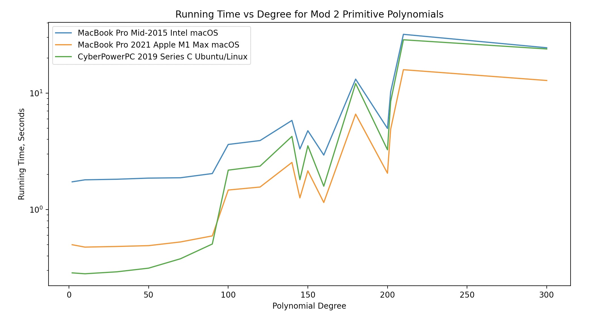
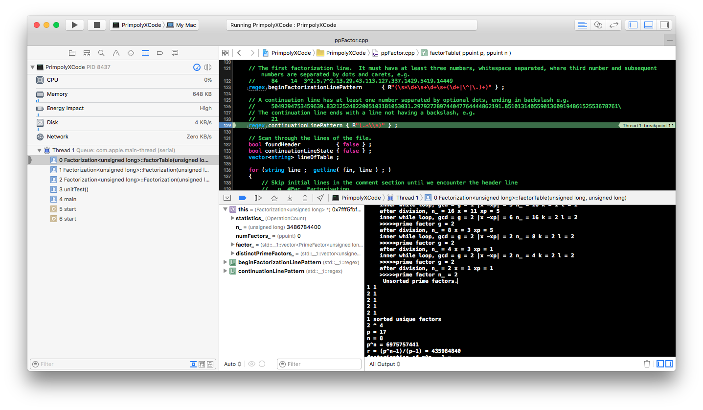
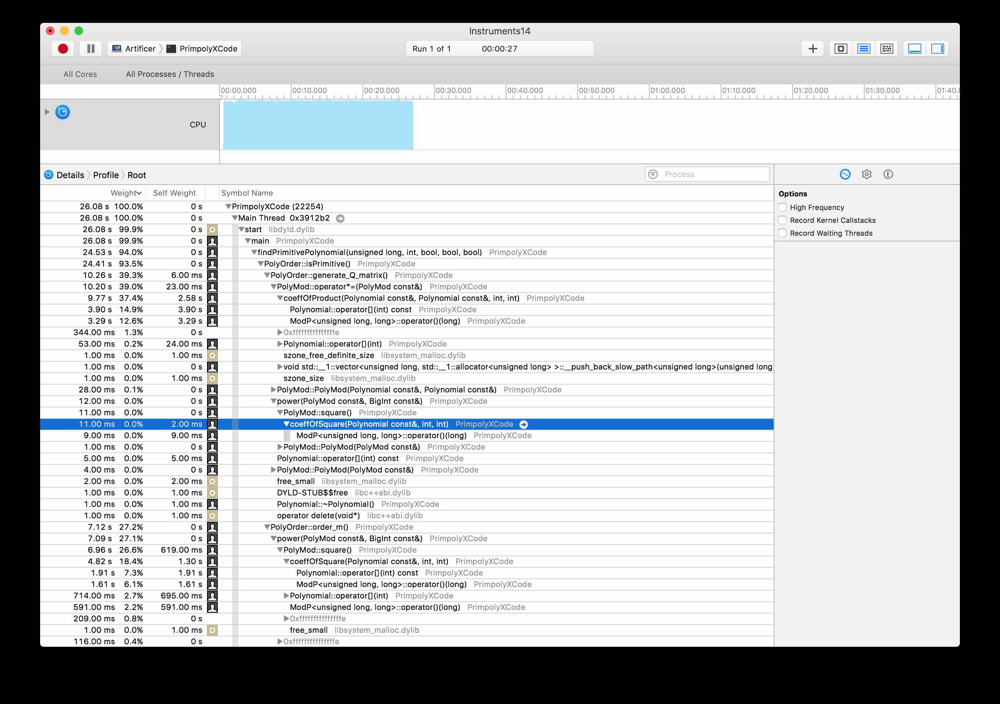
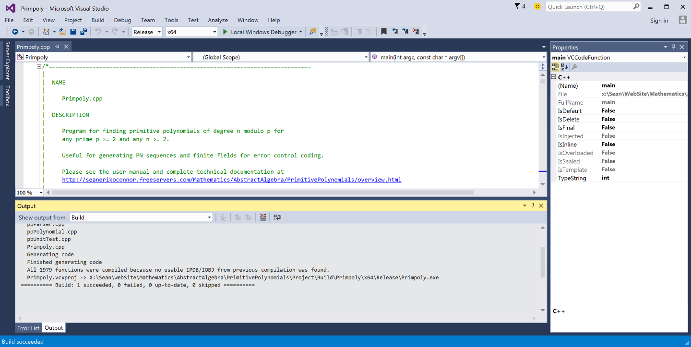

Overview
We present C++ software for a program which generates a primitive polynomial of degree n modulo p. You can also test a given polynomial for primitivity and find all primitive polynomials.
A sample run from the command line:
$ Primpoly 2 200
Primpoly Version 16.4 - A Program for Computing Primitive Polynomials. Copyright (C) 1999-2026 by Sean Erik O'Connor. All Rights Reserved. Primpoly comes with ABSOLUTELY NO WARRANTY; for details see the GNU General Public License. This is free software, and you are welcome to redistribute it under certain conditions; see the GNU General Public License for details.
Primitive polynomial modulo 2 of degree 200
Self-check passes...
x ^ 200 + x ^ 5 + x ^ 3 + x ^ 2 + 1, 2
Total time: 2.0 seconds on my MacBook Pro.
Now we try a prime modulus p > 2,
Primpoly 337 10
Primitive polynomial modulo 337 of degree 10
x ^ 10 + x + 10, 337
Total time: 5.6 seconds.
For more timing analysis on various computers see Primpoly Timing Jupyter Notebook which uses the Python functions in Primpoly Timing Functions
When polynomials are of very large degree, there are faster methods which use computer algebra software to compute Conway and pseudo-Conway polynomials, which are primitive polynomials with additional nice properties. Sage Math Notebook for Finding and Testing Primitive Polynomials
Features
- Finds primitive polynomials modulo p of degree n.
- The prime modulus p < 2147483648 for 64-bit machines; p < 32768 for 32-bit machines. In general, p < 2m/2 - 1 where m = number of bits in the computer's integer type (defined in Primpoly.h).
- No limit on n, but the program will start to slow for high degree due to the difficulty of factoring large numbers (pn-1)/(p-1) when not using factor tables. Factor tables are available for p = 2, 3, 5, 7, 11, courtesy of Tim's Cunningham Numbers [WaybackMachine archive] but see also The Cunningham Project
- Fast, clean implementation of the method of Alanen and Knuth with enhancements due to Sugimoto.
- Please read the user manual which describes all the command line settings, points out some limits in the algorithm and has a detailed example of how to debug the source code.
- Detailed technical memo explaining the theory behind the algorithms.

Download
Primpoly Version 16.4 - A Program for Computing Primitive Polynomials.
 source code and executables zipped archive
are distributed under the terms of the
GNU General Public License.
source code and executables zipped archive
are distributed under the terms of the
GNU General Public License.
Source code is written in C++ and is in the directory SourceCode/Primpoly. The main program which runs on the command line is Primpoly.cpp. Primpoly.h contains all parameters and constants and doc strings. Integer arithmetic modulo p is in ppArith.hpp and ppArith.cpp. Polynomial arithmetic with coefficients in GF(p) is in ppPolynomial.hpp and ppPolynomial.cpp Multiple precision integer arithmetic for non-negative numbers is in ppBigInt.hpp and ppBigInt.cpp. Factoring into primes and primality testing is in ppFactor.hpp and ppFactor.cpp. Counting arithmetic operations is defined in ppOperationCount.hpp and ppOperationCount.cpp. Factor tables are in c*.txt files located in SourceCode/Primpoly/FactorTables. These will need to be in the same directory as the executable Primpoly.exe.
Parsing for polynomials and factor tables is handled in ppParser.hpp and ppParser.cpp I took the liberty of using my own LALR(1) parser generator for the polynomial input parser and the factor table parser. Here is the polynomial grammar and its LALR(1) parse tables. And here is the factor table grammar and the factor table parse tables The C++ LR parser isn't hard to implement using STL vectors and the automatically generated parse tables above.
I do a self-check every time we run implemented in ppUnitTest.hpp and ppUnitTest.cpp Test results print to a log file, unitTest.log.
There's a makefile for macOS, Ubuntu Linux, and Windows/Cygwin. I have not tested on Windows/Cygwin yet.
The compressed archive link above gives you all the source files and tables. But if you want to preview them you can do so here:
- Primpoly.cpp
- Primpoly main program.
-
 View
View
-
 Download
Download
- Primpoly.hpp
- Primpoly main include file.
-
View
-
Download
- ppArith.hpp
- Integer arithmetic classes.
-
View
-
Download
- ppArith.cpp
- Integer arithmetic implementation.
-
View
-
Download
- ppPolynomial.hpp
- Polynomial arithmetic classes.
-
View
-
Download
- ppPolynomial.cpp
- Polynomial arithmetic implementation.
-
View
-
Download
- ppBigInt.hpp
- Multiple precision integer arithmetic classes.
-
View
-
Download
- ppBigInt.cpp
- Multiple precision integer arithmetic implementation.
-
View
-
Download
- ppFactor.hpp
- Factoring into primes and primality testing classes.
-
View
-
Download
- ppFactor.cpp
- Factoring into primes and primality testing implementation.
-
View
-
Download
- ppOperationCount.hpp
- Counting operations classes.
-
View
-
Download
- ppOperationCount.cpp
- Counting operations implementation.
-
View
-
Download
- ppParser.hpp
- Parsing for polynomials and factor tables classes.
-
View
-
Download
- ppParser.cpp
- Parsing for polynomials and factor tables implementation.
-
View
-
Download
- ppUnitTest.hpp
- Unit Test classes.
-
View
-
Download
- ppUnitTest.cpp
- Unit Test implementation.
-
View
-
Download
- makefile
- compile, test, run
-
View
-
Download
- Factor Tables
- Tables of prime factors for prime powers
-
c02minus.txt
c02plus.txt
c03minus.txt
c03plus.txt
c05minus.txt
c05plus.txt
c06minus.txt
c06plus.txt
c07minus.txt
c07plus.txt
c10minus.txt
c10plus.txt
c11minus.txt
c11plus.txt
c12minus.txt
c12plus.txt
C Language Version
The C language version is faster but has limits on the size of p and n since it uses native integer arithmetic. See the user manual for more details. For p=2 we can go as high as n=62. On my MacBook Pro, the time for p=2 and n=62 is 0.57 sec for the C++ version above and 0.09 sec for the C version.
Source code is in the directory SourceCode/PrimpolyC. The main program is Primpoly.c. All parameters and constants are in Primpoly.h High level helper functions are in ppHelperFunc.c. Integer arithmetic modulo p is in ppArith.c Factoring into primes and primality testing is done in ppFactor.c ppIO.c handles the polynomial I/O. ppPolyArith.c does the Polynomial arithmetic. Polynomial order testing is in ppOrder.c
Install and Run
The source builds on Mac and Ubuntu Linux platforms. Just unpack the file Primpoly.tar.gz, build and run. It may run on Cygwin/Windows 10 platforms, but I have not tested that yet.
Factor Tables (Primpoly C++ Version Only)
You'll need to have the factor tables cNNminus.txt in the same directory as the executable Primpoly.exe. You can also place them in a subdirectory.
If you run the program and it can't find the factor tables, it will fail the self check and tell you what happened in the unitTest.log file.
Source Level Debugging and Profiling
On Mac OS X, I use the Xcode IDE for debugging

and profiling
On Ubuntu Linux, I build with make and compile with clang and use the command line debugger lldb.
On Windows platforms, I use the GNU Cygwin toolset for command line compiling with g++ I use Microsoft Visual Studio. for debugging.

Uses for Primitive Polynomials:
- Generating pseudonoise (PN) sequences for spread spectrum communications and chip fault testing.
- Generating Sobol sequences for high dimensional numerical integration
- Generating CRC and Hamming codes.
- Generating Galois (finite) fields for use in implementing Reed-Solomon and BCH error correcting codes.
Acknowledgements
- Thanks to Sergei Goncharov who found a logic bug in my slow primitive polynomial verification test. I was checking that x^k != 1 for k < p^n-1, but didn't include the check that x^k = 1 (mod f(x), p) for k = p^n-1.
- Thanks to Charlie Ross for using my program and pointing out it slows down dramatically when p = 2 and n = 219. This is due to the integer factoring not being able to look up the factorization in a table, and running the Pollard Rho algorithm, which is slow. I found that SageMath has much faster methods for high degree polynomials, and posted an example.
- Thanks to Martin Becker for pointing out a bug when trying to do the primitive polynomial search on p = 65003, n = 2 where the multiple precision arithmetic base is exceeded and also for pointing out a bug in computing Euler Phi for the number of polynomials when p > 2.
- Thanks to K. Jambunathan of the Indian Statistical Institute, Calcutta, India for first suggesting that I increase the numeric precision of the calculations, allowing higher degree polynomials to be generated.
- Thanks to Ted Ford of Hampshire, Britain for extending the program to print all primitive polynomials, for suggesting I replace the stored table of primitive roots with an algorithmic test, and many interesting observations on maximal length sequences.
- Thanks to Tielin Liang for pointing out a mistake in one of my Lemmas in the theoretical section.
- Thanks to Majid Bakhtiari for pointing out that Mersenne primes are an important special case for which we can quickly find extremely high degree polynomials.
- Thanks to Alan Meghrigian for suggesting valuable corrections to the notes.
- Thanks to John McKay for mentioning Conway polynomials which are a special class of primitive polynomial used to represent finite fields.
- Thanks to Sid Paral for pointing out bugs in array bounds checking in the polynomial parser.
- Thanks to Subrata Nandi for pointing out that I need instructions on how to set up the source code in the proper directory organization to so that the makefile will build properly.
- Thanks to Tony Freitas for pointing out two compile errors and how to fix them in Visual Studio 2017 (Microsoft Windows).
- Thanks to Martin Dowd for pointing out methods for finding all primitive polynomials given a single primitive polynomial.
- Thanks to Max-Julian Jakobitsch for pointing out MathJax rendering was broken and how to fix it.
- Thanks to Günter Rote for pointing out errors in the quoted bounds for the Euler Phi function and for pointing out that downloading each source file separately was too cumbersome.
- And finally, thanks to Eric W. Weisstein's World of Mathematics for referencing this web page under primitive polynomials.